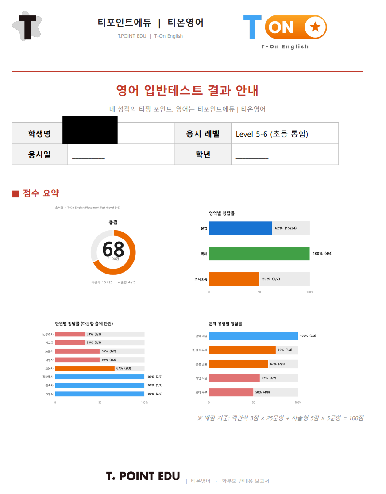
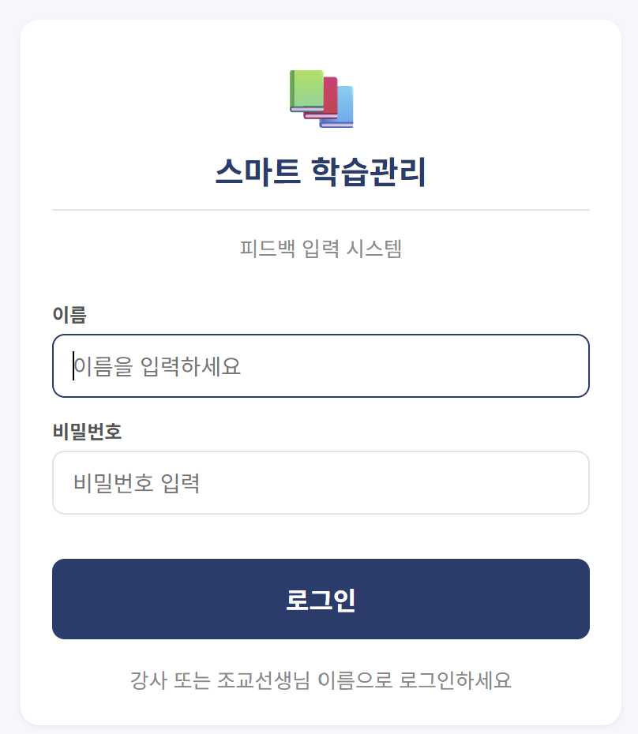
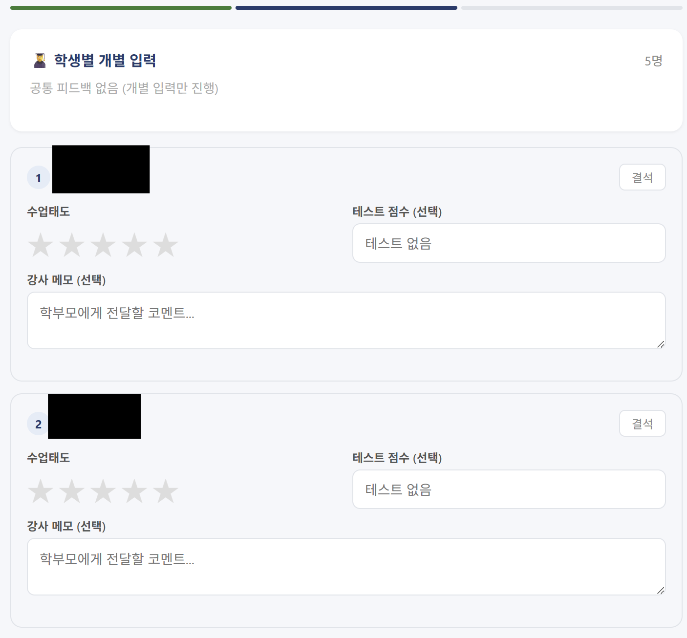
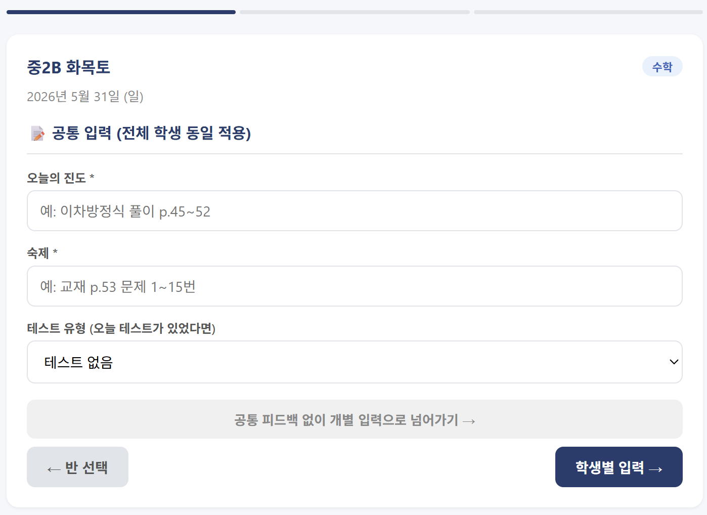

이론이 아니라, 제 학원에서 진짜 써본 것만 말합니다.
학원 운영에 실제로 쓰이는 AI를 1년간 직접 도입·검증한 사람의 시각으로.
다른 AI 강사와 무엇이 다른가 — 3가지 축으로 정리합니다.
전문가·이론가의 말은 학원장이 공감하기 어렵습니다. 강의실 풍경도, 급여날 부담도 겪어본 적이 없으니까요.
저는 현직 학원장입니다 (T-Point Edu 운영).
그래서 학원장이 어제 본 풍경에서 이야기를 시작합니다.
모든 강연·워크숍·자문은, 제가 직접 제 학원에서 도입해본 사례만 다룹니다.
이론적으로 가능한 것 ≠ 실제로 효과 있는 것.
— 이런 디테일이 신뢰의 시작이라고 믿습니다. 검증되지 않은 이야기는 다루지 않습니다.
AI 옹호도, AI 공포도 답이 아닙니다.
"AI 빨리 도입 안 하면 뒤처진다" — FOMO 자극.
"AI 학원이 다 잡아먹는다" — 불안 자극.
반복은 AI에게, 판단은 사람에게 — 그 경계를 긋는 게 원장의 진짜 일이라고 생각합니다.
모든 사례는 T-Point Edu에서 실제 진행한 것입니다. 학생·강사·금액 등 식별 정보는 모두 익명 처리했습니다.




학원장이 AI를 쓰는 방식의 4단계. 본인 학원이 어디인지 확인하고, 다음 단계로 가는 강의를 들으세요.
프롬프트로 일을 도와받음 — 블로그·답변 초안
매번 하던 일을 AI에게 맡김 — 자동화 가이드·페르소나 세팅
자체 시스템을 직접 만듦 — 노션·앱·자동화 워크숍
AI가 의사결정 파트너 — 장기 데이터 분석
"한 원장님인데, AI를 학원에 직접 만들어 쓰는 현직 학원장이에요.
이론이 아니라 본인 학원 사례 그대로 보여줘서, 우리도 따라할 수 있어요."
20년간 한국 사교육 현장에서 입시·학습 전략 컨설팅을 해온 현직 학원장입니다. 2025년부터 학원 운영에 AI 도구를 본격 도입·검증하며, "학원 현장에 진짜 쓰이는 AI 사용법"을 화두로 학원장 대상 강연·워크숍·자문 활동을 합니다.
AI 옹호론도 AI 공포론도 아닌 균형 관점에서, "어디까지 AI에게 맡기고 어디서부터 원장이 직접 해야 하는가"를 동료 학원장들에게 전합니다.
이 채널은 학원장 전용입니다. 학부모를 위한 AI·교육 콘텐츠는 별도 채널 토닥공부 (@todak_gongbu)에서 운영합니다.
강연·워크숍·자문 의뢰, 협업 제안, 단순 질문 — 모두 환영합니다.
24시간 안에 답변드립니다.
— 학원장 동료의 추천·소개는 언제든 환영합니다.